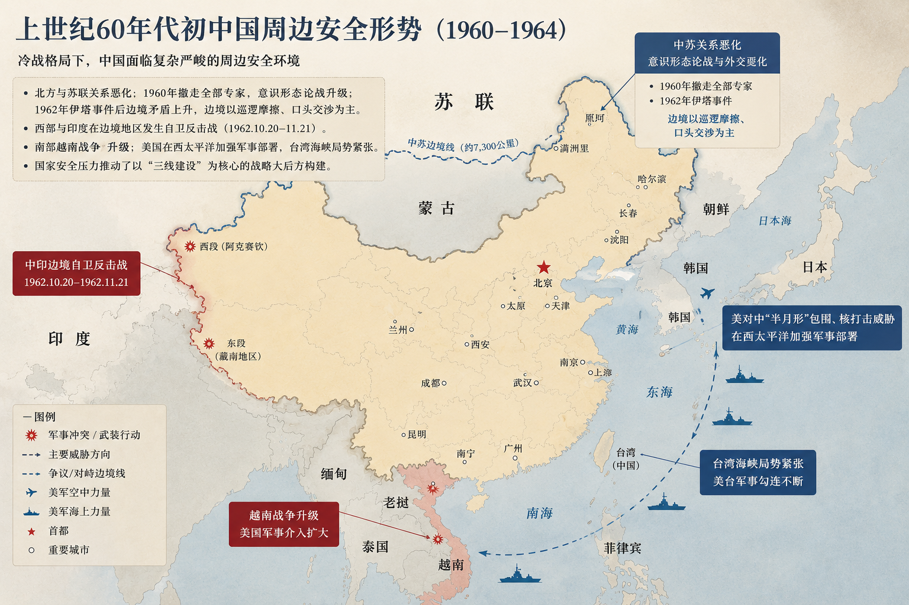
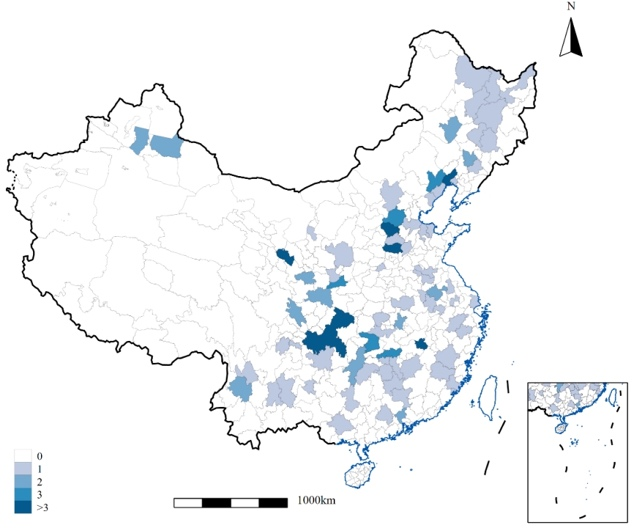
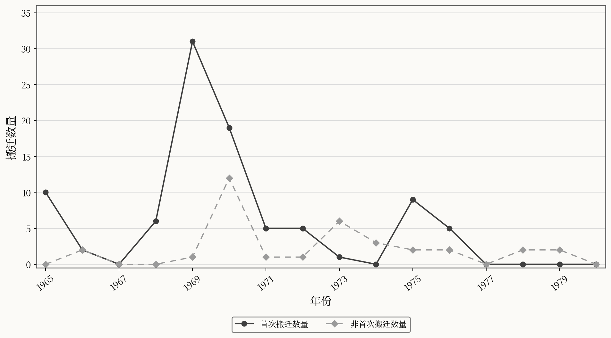
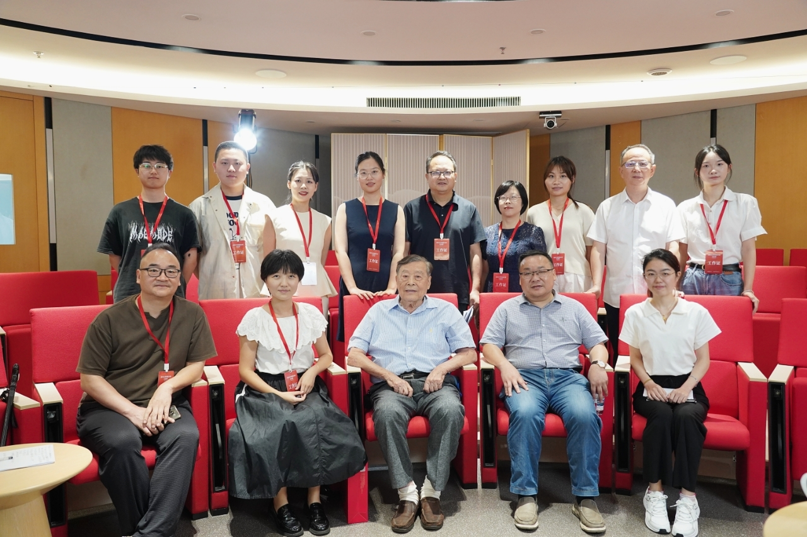
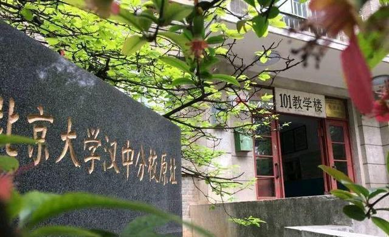

Historical Natural Experiment
“靠山、分散、隐蔽”
高校选址主要服务国防备战而非地方经济需求。行政指令驱动的空间迁移为识别高等教育机构物理邻近性的长期因果效应提供了罕见的历史变异。
我以历史档案构建数据，并运用因果推断识别高等教育政策的长期经济社会效应。研究聚焦高等教育资源空间配置、人力资本积累、劳动力市场与区域创新，同时关注教育、科技、人才一体化议题。
以历史冲击和准自然实验理解高等教育如何改变地区与个体的长期发展轨迹。
我的博士论文以三线建设时期高校内迁为核心历史自然实验，研究一个贯穿全文的问题：当高等教育机构被外生地植入欠发达地区时，它们会在多大程度上重塑当地居民的长期发展轨迹？论文沿着“教育获得—劳动力市场结果—观念转型”三个相互衔接的层次展开，系统考察高等教育资源空间再配置的长期经济社会影响。


时间与规模：1964—1980 年，横跨三五、四五、五五三个五年计划；72 所高校分布于 17 省、77 个地级市。
院校类型：理工 24、农林 21、师范 9、医药 7、综合 4、其他（财经、语言等）7。

三线建设时期高校搬迁年份分布（1965—1980）。实线圆点表示首次搬迁数量，虚线菱形表示非首次搬迁数量；图形按原始论文中的线性图重新绘制。
这项研究从零散的史料开始：我系统比对地方志、教育志、高校校史、档案汇编、口述史，以及《中国高等学校变迁》（季啸风，1992）等资料，逐条复原高校的迁出地、迁入地、时间与办学状态。在清华大学绵阳分校的案例中，我还访谈了多位亲历者，以核验迁校过程并理解其在地影响。由此形成的高校迁徙面板，再与人口普查微观数据和出生队列暴露相连接，同时处理三线工厂冲击、选择性迁移、处理状态测量与空间溢出等识别问题。

“靠山、分散、隐蔽”
高校选址主要服务国防备战而非地方经济需求。行政指令驱动的空间迁移为识别高等教育机构物理邻近性的长期因果效应提供了罕见的历史变异。

高校迁入欠发达地区，能否长期提高当地居民的受教育水平？研究进一步考察教育资源供给、教育观念变化与高校遗产等可能路径。
聚焦受影响队列的劳动力市场结果，如就业状态、行业与职业配置与收入等，并比较三线高校与同期三线工厂冲击，以识别人力资本冲击和物质资本冲击的不同作用。
更深层次地，高校作为知识与现代规范的组织载体，其物理存在是否重塑当地居民的成就归因、家庭与婚姻观念、性别平等意识、教育期望与公共参与？
这篇论文将三线高校迁入与三线工厂建设置于同一队列双重差分框架，比较人力资本冲击与物质资本冲击如何塑造本地出生队列的教育获得与长期职业配置。基于手工整理的高校迁徙面板、三线工业强度与人口普查微观数据，论文识别高校、工厂及其互补性，并检验它们分别对应的教育和劳动市场结果。
Job market paper inquiries ↗高校迁入显著提升当地居民受教育水平，效应主要集中于中学阶段，并在女性与农村居民中更明显。
Read paper ↗作为“劳动力市场结果”研究模块中的专题论文，使用2000年人口普查与三线高校历史数据库，聚焦个体成年后的职业地位获得。核心结果包括ISEI职业社会经济地位、进入高地位职业与专业技术职业的概率，并延伸考察职业任务、院校类型—职业去向对应性及不同地方吸收条件下的异质性，同时控制同期三线工厂冲击。
See working papers ↓从成就归因、家庭与婚姻、性别平等、教育期望和公共参与五个维度识别高校邻近性的观念溢出。
Research inquiries ↗代表性成果涵盖高等教育空间布局、人力资本、区域创新与青少年发展；其中三线建设研究构成博士论文的核心研究主线。
“三线建设”时期随着工业备战展开，大批高校向“三线建设”地区内迁，对迁入地居民的人力资本积累产生了深远影响。本文基于“三线建设”期间高校迁徙数据与1990年人口普查微观抽样数据，采用队列双重差分法，检验“三线建设”时期高等教育布局调整对当地居民人力资本积累的影响及其机制。研究发现，“三线地区”高校迁入显著提高了当地居民的受教育水平。机制检验结果表明，“三线地区”的高校迁入通过遗留高等教育资源与革新婚姻生育观念产生人力资本效应。异质性分析表明，女性和农村居民受到更加显著的影响。“三线建设”时期的高等教育布局调整对促进我国长期人力资本积累具有深远的历史意义。
在新一轮科技革命与产业变革加速演进、大国竞争持续加剧的背景下，人才培养与技术创新体系正经历深刻重构，高等教育作为教育、科技与人才的关键结合点，其空间布局对区域创新的驱动机制亟需深入探讨。本文统合系列实证评估与理论研究，构建了以人才集聚—溢出和创新集聚—溢出为核心路径、以中国特色区域创新理论为理论统领的分析框架，阐释高等教育通过要素集聚与主体协同促进区域创新发展的内在逻辑。综合利用长时段、细颗粒度的多源数据与前沿因果推断方法，实证揭示布局调整促进人力资本积累与流动、驱动科技创新与产业升级的多重机制，塑造区域创新生态。在理论层面，研究构建“有识大学—有效市场—有为政府”的协同创新理论，并对西方经典三螺旋理论进行本土化阐释，提炼中国情境下政产学研从“要素集聚”向“系统效能”质变的演化路径。
现阶段，注重青少年非认知能力提升已成为国际共识，而我国城乡青少年非认知能力发展差距长期存在。本研究聚焦青少年群体高发的视力健康问题，基于大五人格框架，运用2013—2014、2014—2015学年中国教育追踪调查（CEPS）数据，通过双重差分法、倾向值匹配双重差分法，评估两期调查间近视对青少年人格特质的作用效应，并探讨其间的城乡差异。研究发现，整体而言，近视对个体的外倾性、宜人性有显著负向影响，对神经质有显著正向影响，对开放性、尽责性无显著影响。“近视人格”在城市学生中突出表现为外倾性、宜人性的显著下降，在农村学生中显著表现为神经质的显著上升。研究据此提出及时监测学生视力健康状况、关注城市近视学生在校活动参与、关怀农村近视学生内在情绪体验等建议。
当前研究组合聚焦历史高等教育冲击、制度扩散、地方教育财政与社会外部性。
一作｜合作者：哈巍｜已投稿
一作｜合作者：哈巍、刘宇阳｜已投稿
三作｜合作者：哈巍、陈晓宇、刘宇阳｜已投稿
一作｜合作者：哈巍、康乐、林璐｜修改中
一作｜合作者：哈巍、李卓熠、林璐｜修改中
北京大学教育经济与管理博士训练与南开大学 PPE 跨学科背景。
教育经济与管理 · 管理学博士（硕博连读）｜师从哈巍教授｜GPA 3.86，专业前10%
PPE（政经哲）实验班 · 经济学、法学双学士｜经济学方向导师：李泽广教授；政治学方向导师：张志红副教授｜GPA 3.87，专业前10%
本科、研究生与 Ed.D 课程的教学与助教经历。
本科生课程｜课程讲师组成员
研究生课程｜助教｜任课教师：丁延庆
Ed.D 课程｜助教｜任课教师：管培俊
研究生课程｜助教｜任课教师：丁延庆
本科生课程｜助教｜任课教师：张志红
欢迎就高校教研岗位、教育经济学与高等教育研究、合作研究与学术会议等事项联系。当前工作与学习地点：北京大学教育学院。